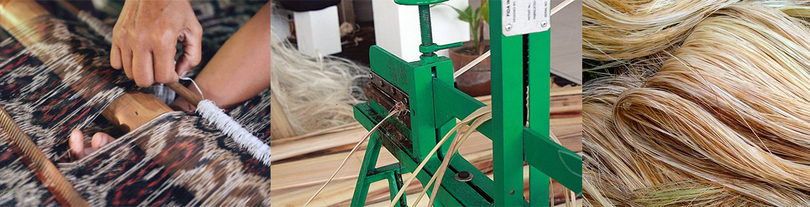

Our Products
FTI enhances its customers’ business by providing the very highest quality abaca with value pricing, while fostering long-lasting, successful, and mutually beneficial relationships with its customers, suppliers, and work force. It constantly strives to meet or exceed its customer needs and expectations of price, service, and quality. The company provides only the best abaca that has passed through strict quality control measures and government standards.
Process of Our Products

Our Story
The organization was established as a sole proprietorship in Tabaco, Albay in the 1940s by its founder, Mr. Lim Cheng Bee, for the purpose of maximizing the abundant supply of abaca and copra in the Bicol Region. For two (2) decades, the company secured its presence in the trading of abaca and copra with local suppliers and buyers. In the 1960s, Mr. Lim was joined by colleagues and business partners, and the company was subsequently incorporated as FTI Trading Corporation. In 1967, the company started exporting abaca to Japan and the United States of America (USA). Later on it also tapped into the European market. Today, FTI is known as the biggest trader of abaca in the Philippines and in the world. FTI primarily serves the fiber needs of its affiliate company, Specialty Pulp Manufacturing, Inc. (SPMI), of which FTI holds majority ownership. SPMI exports abaca pulp mostly to Europe, Japan, and the USA. FTI also maintains holdings in companies engaged in the manufacture of coconut and vegetable oil and desiccated coconut. To date, the second and third generations of Lim family members are currently involved in the companies belonging to the FTI Group.
Geographic Expansion
To meet the demand for abaca, FTI expanded its operations and established buying stations or branches in strategic locations in the country. It currently has branches in Tabaco City, Albay in Luzon; Baybay City, Leyte in Visayas; and Davao City in Mindanao.
Our Vision
FTI Trading Corporation was established to support its stakeholders to sustain its industry leadership in the trading of abaca and copra in the Philippines and in the world.
Our Mission
a. mainstream abaca and copra as sustainable livelihood sources for its suppliers;
b. use appropriate technology to maximize production;
continuously improve the efficiency and responsiveness of its systems and processes;
d. promote employee well-being.
Versatility of the Abaca

The abaca is considered to be the strongest natural fiber, having a tensile strength that is three (3) times that of sisal or Agave sisalana. Natural fibers are also accepted to have better characteristics than common human-made fibers. Compared with synthetic fibers like rayon and nylon, abaca fiber not only possesses the highest tensile strength but also has longer elongation in both wet and dry states. Because of its non-slipping characteristics, the abaca is highly preferred in oil dredging/oil exploration, navies, and merchant shipping. As countries all over the world become more conscious of the need to protect and preserve the environment, bio-degradable materials such as the abaca are preferred over non-biodegradable ones like plastic and other synthetic materials. Not only is the abaca still used for ropes and cordage at present. Its versatility is also evident in its many other current uses as a much sought-after raw material for various industrial and commercial products including currency and security paper, tea bag paper, coffee filter, meat and sausage casing, cigarette paper, filter paper, plug wrap, stencil paper, electrolytic condenser paper, non-woven fabrics, furniture and fixtures, gifts and novelty items, decorative accessories, textiles, handicrafts, cosmetics, skin care products, grocery bags, automobile parts, and many others.